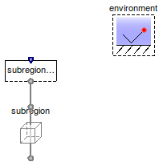
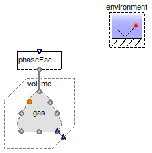
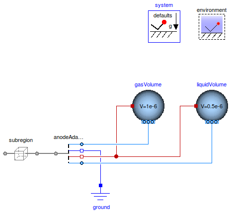

Table of Contents
- User's Guide
- BCs
- Sensors
- Assemblies
- Regions
- Subregions
- Connectors
- Characteristics
- Units
- Quantities
- BaseClasses
Download
- Latest: FCSys-2.0.zip (**Please check back soon or contact kdavies4 at gmail.com.)

| Name | Description |
|---|---|
| Test the BCs for the face of a subregion | |
| Test the BCs for the face of a subregion with phases | |
Test the Router | |
Test the 'Adapte-' model |
 FCSys.BCs.Examples.FaceBC
FCSys.BCs.Examples.FaceBC
model FaceBC "Test the BCs for the face of a subregion" extends Modelica.Icons.Example;FCSys.BCs.FaceBus.Subregion subregionFaceBC(gas(inclH2O=true, H2O( redeclare FCSys.BCs.Face.Material.Current material(spec(k=0)), inviscidX=false, inviscidZ=false))); Subregions.Subregion subregion( L={1,1,1}*U.cm, inclReact=false, inclXFaces=false, inclYFaces=true, inclZFaces=false, inclLinX=false, inclLinY=true, graphite(inclC=true, C(V_IC=0.5*U.cm^3)), gas(inclH2O=true, H2O( xNegative(thermoOpt=ThermoOpt.ClosedAdiabatic, inviscidY=true), xPositive(thermoOpt=ThermoOpt.ClosedAdiabatic, inviscidY=true), zNegative(inviscidY=true), zPositive(inviscidY=true), yPositive( thermoOpt=ThermoOpt.OpenDiabatic, inviscidX=false, inviscidZ=false)))); inner BCs.Environment environment; equationconnect(subregion.yPositive, subregionFaceBC.face); end FaceBC;
FCSys.BCs.Examples.FaceBCPhases
| Type | Name | Default | Description |
|---|---|---|---|
| Geometry | |||
| Length | L[Axis] | Length (L) [l] | |
model FaceBCPhases "Test the BCs for the face of a subregion with phases" extends Modelica.Icons.Example; // Geometric parameters inner parameter Q.Length L[Axis](each min=Modelica.Constants.small,start=ones (3)*U.cm) "Length (L)"; final inner parameter Q.Area A[Axis]={L[cartWrap(axis + 1)]*L[cartWrap(axis + 2)] for axis in Axis} "Cross-sectional area";FCSys.BCs.FaceBus.Phases.Gas phaseFaceBC( inclH2O=true, H2O(thermoOpt=ThermoOpt.OpenDiabatic, redeclare FCSys.BCs.Face.Material.Current material(spec(k=0))), axis=FCSys.BaseClasses.Axis.y); Subregions.Volume volume; FCSys.Subregions.Phases.Gas gas( inclReact=false, inclLin={false,true,false}, inclH2=false, inclH2O=true, H2O( xNegative(thermoOpt=ThermoOpt.ClosedAdiabatic, inviscidY=true), xPositive(thermoOpt=ThermoOpt.ClosedAdiabatic, inviscidY=true), yPositive(thermoOpt=ThermoOpt.OpenDiabatic), zNegative(inviscidY=true), zPositive(inviscidY=true))); inner BCs.Environment environment; equationconnect(gas.yPositive, phaseFaceBC.face); connect(gas.inert, volume.inert); end FaceBCPhases;
FCSys.BCs.Examples.RouterRouter model
model Router "Test theRouterextends Modelica.Icons.Example; // TODO: Make this into a meaningful example.model"FCSys.BCs.Router router; end Router;
 FCSys.BCs.Examples.AnodeAdapter
FCSys.BCs.Examples.AnodeAdapter'Adapte-' model
model AnodeAdapter "Test the'Adapte-'model" extends Modelica.Icons.Example; extends Modelica.Icons.UnderConstruction; /* **fails simulation: "Model error - power: (1/subregion.graphite.'e-'.rho_face[1, 2]) ** (-1.66666666666667) = (-0.000669271) ** (-1.66667) Non-linear solver will attempt to handle this problem." */inner Modelica.Fluid.System system(T_ambient=293.15 + 5); inner BCs.Environment environment(T=350*U.K); Subregions.SubregionNoIonomer subregion( L={1,1,1}*U.cm, inclReact=false, inclYFaces=false, inclZFaces=false, gas(inclH2=true, inclH2O=true), graphite(inclC=true, 'incle-'=true), liquid(inclH2O=true)); Adapters.Anode anodeAdapter(redeclare package LiquidMedium = Modelica.Media.CompressibleLiquids.LinearColdWater); Modelica.Electrical.Analog.Basic.Ground ground; Modelica.Fluid.Vessels.ClosedVolume gasVolume( use_portsData=false, nPorts=1, V=1e-6, use_HeatTransfer=true, redeclare Modelica.Fluid.Vessels.BaseClasses.HeatTransfer.IdealHeatTransfer HeatTransfer, redeclare package Medium = FCSys.BCs.Adapters.Media.AnodeGas, medium(p(fixed=true),X(each fixed=true))); Modelica.Fluid.Vessels.ClosedVolume liquidVolume( nPorts=1, use_HeatTransfer=true, redeclare Modelica.Fluid.Vessels.BaseClasses.HeatTransfer.IdealHeatTransfer HeatTransfer, V=0.5e-6, use_portsData=false, redeclare package Medium = Modelica.Media.CompressibleLiquids.LinearColdWater, medium(p(fixed=true),T(fixed=true))); equationconnect(ground.p, anodeAdapter.pin); connect(subregion.xPositive, anodeAdapter.face); connect(gasVolume.heatPort, anodeAdapter.heatPort); connect(gasVolume.ports[1], anodeAdapter.gasPort); connect(liquidVolume.heatPort, anodeAdapter.heatPort); connect(anodeAdapter.liquidPort, liquidVolume.ports[1]); end AnodeAdapter;